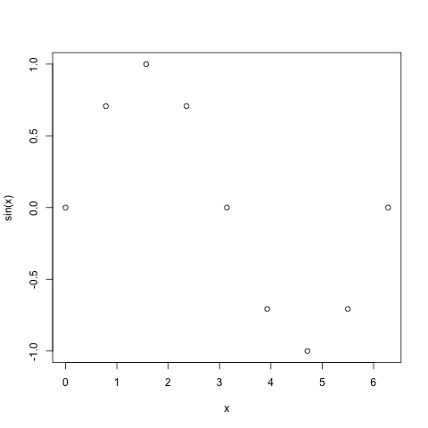

データのプロット
(Press ? for help, n and p for next and previous slide)
データのプロット
可視化の重要性
- データの特徴や傾向を把握するために効果的
- Rはきわめて多彩な作図機能を持つ
package::graphicsに含まれる代表的な描画関数を取り上げて解説する- 描画関連の関数は色， 線の種類や太さ， あるいは図中の文字の大きさなどを指定することができる
- 用意されている多彩なオプションは説明しきれないため，
必要に応じて関数
help()(ヘルプ)と と関数example()(例題) を参照のこと
図の保存
- RStudioの機能を使う場合:
- 右下ペインの“Plots”タブの“Export”をクリック
- 形式やサイズを指定する
(クリップボードにコピーもできる)
コンソール/Rscriptで実行する場合:
help(pdf): PDFファイルに保存help(png): PNGファイルに保存help(dev.copy): “graphic device” 間でコピー
などを参照
基本的な描画
ベクトルの描画: 関数 plot()
ベクトルデータの描画を行う
基本書式
plot(x, y=NULL, type="p", xlim=NULL, ylim=NULL, main=NULL, xlab=NULL, ylab=NULL, ...)
- 関数の引数
x,y: ベクトル．yは省略可能．type: 描画タイプ．既定値はp(点)．l(折れ線)など指定可xlim: \(x\) 軸の範囲．既定値は自動的に決定ylim: \(y\) 軸の範囲．既定値は自動的に決定main: 図のタイトル．既定値は空白xlab: \(x\) 軸のラベル名．既定値はIndexylab: \(y\) 軸のラベル名．既定値はxのオブジェクト名
関数 plot() のオプション
- よく利用されるその他のオプション (
...の部分)col: 色の指定．"red"や"blue"など．
(指定可能な色は関数colors()で照会できる)pch: 点の形． 詳細はhelp(points)を参照lty: 線のタイプ． 実線・破線など．タイプ名もしくは数字で指定． 詳細はhelp(par)を参照lwd: 線の太さ．数字で指定cex: 文字の大きさ． 既定値の何倍にするかを指定
関数 plot() の例 (1/3)
## xのみ与えた場合 plot(x) x <- pi/4*(0:8) # 45度(pi/4)おきに1周期分 (0-2*pi) plot(sin(x)) # 横軸はベクトルの要素番号，縦軸はsin(x)の値

関数 plot() の例 (2/3)
## xとyを与えた場合 plot(x,y) x <- pi/4*(0:8) plot(x, sin(x)) # x の値に対する y=sin(x) の値をプロット

関数 plot() の例 (3/3)
## オプションを追加 x <- pi/4*(0:8) plot(x,sin(x),type="l",lwd=3,col="blue",ylab="y=sin(x)")
関数の描画: 関数 plot()
1変数関数の描画を行う
基本書式
plot(x, y=0, to=1, ...)
- 関数の引数
x: 1変数関数 (関数名)y: \(x\) 軸の左端 (fromでも良い)to: \(x\) 軸の右端
別の関数
fやベクトルを重ね書きする場合curve(f, add=TRUE, ...) points(x, y, ...)
例: graph-plot.r
### 関数の描画 plot(sin, 0, 4*pi, col="blue", # グラフの線の色 lwd=2, # グラフの線の太さ ylab="sin/cos" # y軸のラベル ) curve(cos, add=TRUE, # グラフを上書き col="red", lwd=2) x <- seq(0, 4*pi, by=0.1) y <- sin(x) + rep_len(c(-0.2, 0.1), length(x)) points(x, y, col="green", pch="*") # 点を追加. pchは点の形を指定

例: graph-plot.r
### データ点の描画 plot(x, y, type="p", pch="x", ylim=c(-2,2)) # ylimで値域を指定 curve(sin, add=TRUE, col="orange", lwd=2) lines(x, y, col="blue") # 折れ線を追加